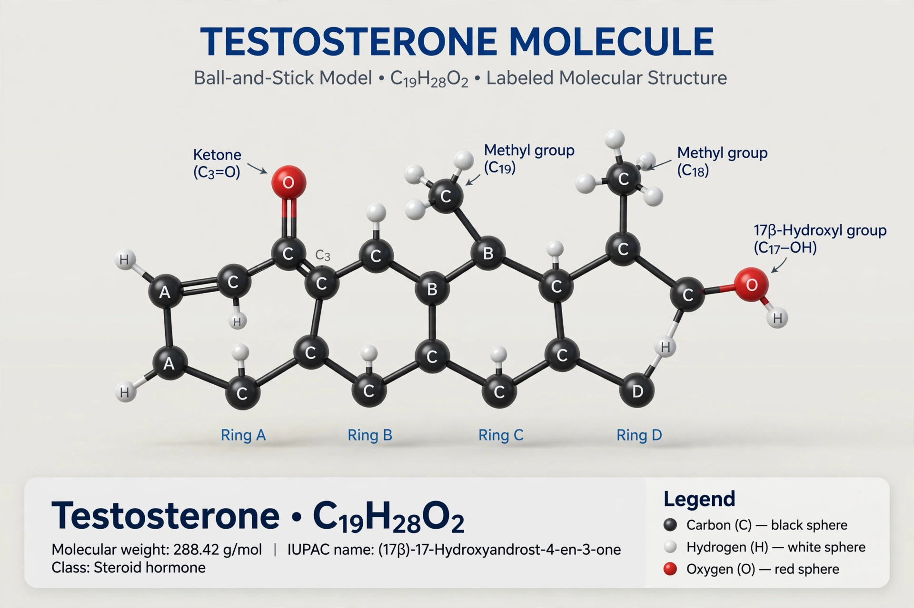

From Wikipedia, the free encyclopedia
| Androgen | |
|---|---|
 | |
| Class | Steroid hormones |
| Principal members | Testosterone, dihydrotestosterone (DHT), androstenedione, DHEA |
| Produced by | Testes, ovaries, adrenal glands |
| Receptor | Androgen receptor |
An androgen (from Greek andr-, the stem of the word meaning "man") is any natural or synthetic steroid hormone that regulates the development and maintenance of male characteristics in vertebrates by binding to androgen receptors. This includes the embryological development of the primary male sex organs, and the development of male secondary sex characteristics at puberty.
Androgens are produced chiefly in the testes in males, and in smaller amounts by the ovaries and adrenal cortex in females. The principal androgens are testosterone and its more potent metabolite dihydrotestosterone (DHT). The adrenal glands also secrete weaker androgens such as dehydroepiandrosterone (DHEA) and androstenedione.
During fetal development, androgens drive differentiation of the male reproductive tract. At puberty they promote growth of the testes and penis, deepening of the voice, growth of facial and body hair, increased muscle mass and bone density, and spermatogenesis. Androgens also influence libido, mood, and red blood cell production.
Synthetic androgens (anabolic steroids) are used clinically for male hypogonadism and certain anaemias, and are sometimes misused for performance enhancement. Excess androgen in women causes hirsutism, acne, and virilisation, as in polycystic ovary syndrome; deficiency in men causes reduced libido, fatigue, and loss of muscle mass. Insensitivity to androgens (androgen insensitivity syndrome) results from mutations in the androgen receptor gene.
Categories: Androgens | Steroid hormones | Endocrinology